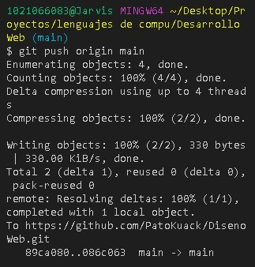

Se crea un repositorio en GitHub:

Posicionado en la carpeta del computador en donde se tiene el proyecto que se subirá al repositorio creado se usa el comando git remote add origin URL copiado para crear un "origin" con el que se descarga el repositorio y se suben cambios o aportes desde nuestro computador. Con git remote -v se puede comprobar que se hizo todo correctamente, aparecerá un texto que indica el origin, la URL y entre parentesis "fetch" y "push".

Si la rama principal se llama "master" se le cambia el nombre a la rama principal ya que desde 2020 se dejó de utilizar "master" para convertirse en "main" con el comando git checkout master para dirigirse a la rama master, después se escribe el comando git branch -m main

Se indica que las ramas principales sean main para futuros proyectos con el comando git config --global init.defaultBranch main

Se envia al origen, la rama main con el comando git push origin main. Si se queda pasmada la terminal de git permitiendo solo ingresar texto, entonces se presiona CONTROL + c para detener el proceso, después se abre otra terminal como en CMD o preferentemente una terminal de "visual studio code" y se vuelve a escribir este comando.

Se integran los cambios remotos antes de hacer un push, para esto se importa el repositorio desde el origen, la rama main con el comando git pull origin main

Se fucionan las historias no relacionadas, es decir, la rama local y la rama de GitHub con el comando git pull origin main --allow-unrelated-histories, esto generalmente solo se usa con el primer pull a un repositorio.

Se sube el proyecto con todos sus commits con el comando git push origin main
Se recarga la página de GitHub y se podrá visualizar los archivos y su información como sus comits o fecha de ultima modificación.